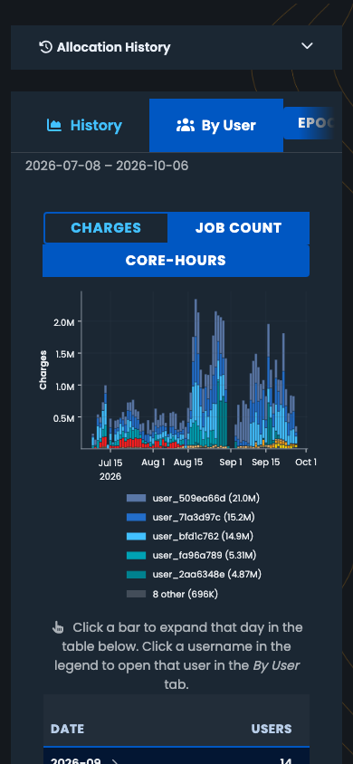
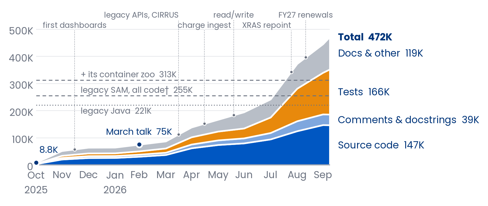
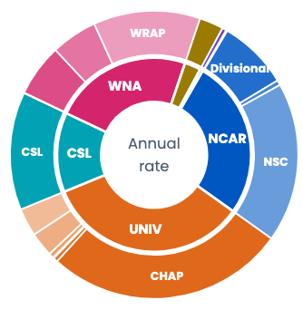
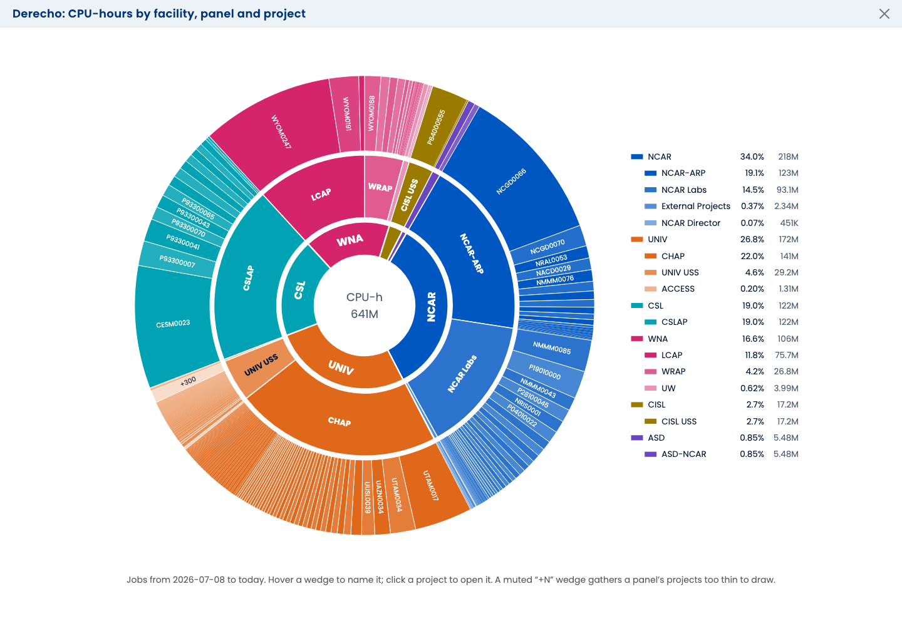

flowchart TB
XRAS["ARC / XRAS<br/>NSF API<br/>allocation approvals"]:::inb
LDAP["NCAR identity<br/>people, groups,<br/>organizations,<br/>institutions"]:::inb
COL["PBS queue status<br/>system usage metrics"]:::inb
JOBS["PBS job history<br/>finished jobs"]:::inb
SAM[("SAMuel<br/>+ SAM database")]:::core
WEB["Dashboards<br/>users, support staff"]:::out
CLI["CLIs<br/>operators"]:::out
PBS["PBS scheduling<br/>fairshare, queues"]:::out
PROV["Provisioning<br/>UNIX users & groups"]:::out
MAIL["Email<br/>notices, invites"]:::out
XRAS -->|allocations| SAM
LDAP -->|identities| SAM
COL -->|every 5 min| SAM
JOBS -->|charges, hourly| SAM
SAM --> WEB
SAM --> CLI
SAM --> PBS
SAM --> PROV
SAM --> MAIL
classDef inb fill:#E6F0FA,stroke:#0057C2,color:#00357A
classDef core fill:#0057C2,stroke:#00357A,color:#FFFFFF
classDef out fill:#FFF4E0,stroke:#FAA119,color:#00357A
October 8, 2026
SAMuel
SAM, updated for an extended lifecycle
NSF NCAR/CISL
SAM Overview
What SAM is, who uses it, and what SAMuel puts on top of it.
Systems Accounting Manager (SAM)
SAM is the system of record for who may compute, on what, and how much.
- Projects hold allocations on each resource: an amount, a date window, a balance.
- Users belong to projects, and their jobs are charged against those allocations.
- University allocations arrive through XRAS; NCAR, WNA and CSL have their own paths.
- People come from NCAR’s identity system. SAM never creates users; it mirrors them.
- Lots of organizational and grant-related metadata, tying usage to funding agencies etc… for reporting purposes.
Resources it accounts for
- Derecho and Gust (HPC)
- Casper (analysis and visualization)
- Campaign Store and Stratus (disk)
Facilities
- Distinct “communities” served.
- NCAR, UNIV, WNA, CSL, CISL, …
Deep roots
SAM has run CISL’s allocations for nearly 15 years:
- A web interface for users and administrators.
- Back-end processing for identity management and accounting.
- A web API feeding the batch scheduler, storage quotas, and friends.
- A MySQL database gluing all of it together.
- 255K lines of code, mostly Java (Spring, Hibernate, JSF/PrimeFaces, Flyway), plus 57K more in a plethora of containerized microservices.
†SAMuel is SAM updated for an extended lifecycle: a modernization and refactoring effort to support another generation.
Same database, new everything around it
| SAM | SAMuel | |
|---|---|---|
| Code | Java: Spring, Hibernate | Python: SQLAlchemy 2, Flask |
| Web UI | JSF / PrimeFaces | htmx + Bootstrap 5, mobile and dark mode |
| Database | MySQL | the same MySQL (Postgres-ready) |
| Background work | containerized microservices | scheduled tasks with a run ledger |
| Deployment | VMs with Podman and a Tomcat server | containers on CIRRUS (Kubernetes), via GitOps |
†Sharing one database allows an overlap phase between the old and new systems. It also brings challenges.
How we got here
- Oct 2025: a Python model of the production database, read as-is.
- Nov–Dec 2025: a CLI, a REST API, the first dashboards.
- Early 2026: allocations dashboard, charging, expiration emails.
- Apr 2026: legacy-compatible APIs for the systems that call SAM, and a home on CIRRUS.
- May 2026: SAMuel takes over the daily charge ingest.
- June 2026: the web app goes read/write: edits land in the shared database.
- August 2026: XRAS hands its approved allocations to SAMuel directly.
- September 2026: FY27 renewals run in SAMuel.
- Today: SAMuel is production SAM, at sam.hpc.ucar.edu.
One database, five audiences
| Who | What they do | Where |
|---|---|---|
| Users and PIs | check balances and usage, manage members, invite collaborators | User dashboard |
| Support staff | manage projects and allocations, work the account-request queue | Admin and Allocations dashboards |
| Everyone | see what Derecho, Casper and JupyterHub are doing | Status dashboard (public) |
| Operators | report, audit, fix in bulk | sam-search, sam-admin |
| Other systems | provisioning, PBS scheduling, XRAS | REST API |
The big picture
By the numbers
- 4 web dashboards: User, Admin, Allocations, Status.
- 14 REST API modules. 5 answer byte-for-byte like legacy SAM, so no caller had to change.
- XRAS’s handoff endpoints, served natively.
- 3 command-line tools:
sam-search,sam-admin,sam-status. - 8 scheduled tasks, checked every 15 minutes.
- 11,071 automated tests, run on every change.
More than a port - new capabilities
- Invitations and account requests: a sponsor invites; the request reaches NUSD as a ticket.
- Events for managing large project rosters for e.g. workshops and tutorials.
- Notification framework: expiration notices with previews and a ledger, so nobody is mailed twice. Currently email, designed for expansion.
- Live system status for Derecho, Casper and JupyterHub, every 5 minutes.
- Usage drill-downs: per project, per user, per day; export to Excel.
- Roles and access managed in the app, scoped by facility.
- Mobile and dark mode, because it is worth the flexibility.
Plugins: optional by design
Some features live in companion packages, loaded only where they are installed:
- Job history: My Jobs, per-job drill-downs, charge ingest (
hpc-usage-queries). - Disk scans: who is using which directories (
fs-scans). - Scheduling tools: the PBS fairshare tree, served ready-made by the API (
hpc-scheduling-tools).
Each has an off switch. A missing plugin shows a banner, never an error page, and the rest of SAMuel carries on.
Theoretically a site-specific plugin would make it easier to deploy at another site.
†Plugins are especially useful for things tied to a machine lifecycle (per-job history) or likely to change through time (scheduler implementation).
A user’s view: projects and resource balances
Usage, by day and by user
Allocations across every facility
Admin: managing projects
Status: what Derecho is doing right now
Status, signed in: which projects are running
Mobile and dark mode
Every page works at phone width, and dark mode is a first-class theme, charts included.
Charts are drawn on the server for the layout and theme you asked for, so a phone gets a phone-sized chart, not a shrunken desktop one.

The Progression

†Every text line on main, as the March talk counted. Legacy SAM: code files only, tests in, data and docs out. A landmark, not a race.
The Good, the Bad, the Murky
| The Good | The Bad | The Murky |
|---|---|---|
| One database, no migration: people saw a new interface, not a new system. | Legacy SAM still owns a few integrations, so two systems share one database for now. | Postgres: both engines work today; an all-Postgres production is a decision, not a task. |
| Every change is tested (11,071 tests) and deployed through GitOps. | A lot of surface for a small team to own. | Much of this was written with an AI agent. What does that mean for the next maintainer? |
| Features ship in days, not release cycles: 728 merged pull requests. |
Concepts
Users, projects, resources, allocations, and usage tracking.
SAM in one sentence
- Who may compute, on what, how much they can use, and where did usage come from.
- Everything else is a view of those answers: the dashboards, the APIs, the scheduled tasks, the LDAP feed, PBS’s fairshare tree.
- This part is the model, in words and pictures. Part 3 shows the tables.
†SQL specifics are deferred to Part 3.
The concepts & linkage
Users: SAM never creates one
- People start in Fischer Identity, reach the UCAR directory (LDAP), and are mirrored into SAM by
sam-ldap-syncd: name, UPID,unix_uid, emails, affiliations, and so on. - Active means active and not locked.
- Registration and invitations create an account request. The person is created upstream, and the mirror brings them in.
- An event (a workshop, a tutorial) gathers many requests under one code and one project. Each person joins that project once their account exists.
†A request is fulfilled when the person’s email shows up in users. SAM notices; it doesn’t decide.
‡Groups are subtler. A project defines its unix group implicitly, by its members; adhoc groups come from upstream, like people. Details later in this part.
Projects: the unit of accountability
- A projcode (
SCSG0001), a title, a facility and an allocation type. - One lead (the PI) and at most one admin (optional).
- The lead and admin manage the roster, edit some of the metadata and, in a project tree, redistribute resources among the children.
- A
unix_gid: every project is also a unix group. More on that later. - Active is a flag. An inactive project keeps its history and loses its access.
Resources: where the hours go
- Machines come in pairs: Derecho and Derecho GPU are separate resources, with separate allocations.
- An allocation of exactly 1 is an access grant: no unit, no budget.
| Type | Examples | Allocated in |
|---|---|---|
| HPC | Derecho, Derecho GPU, Gust | core-hours |
| DAV | Casper | core-hours |
| DISK | Campaign_Store, Stratus | TiB-years (“TiB”) |
| ARCHIVE | HPSS | TiB-years |
| DATA ACCESS | Data_Access | access only |
Facility, panel, allocation type, project
graph LR
F["Facility<br/>whose share:<br/>UNIV, WNA, NCAR, …"] --> PN["Panel<br/>who reviewed<br/>the request"]
PN --> AT["Allocation type<br/>the program:<br/>University, Staff, …"]
AT --> P["Project"]

Who, where, and who pays
- Charges land on a project. The reporting metadata hangs off the project and its people.
- Organizations: NCAR and UCAR units from the directory, as a tree (UCAR → NCAR → lab → group). Users and projects both link to them, with dates.
- Institutions: universities and outside research organizations. Users link to them; a project’s institution is its PI’s.
- Contracts: the funding behind a project: an award number, a source (NSF for ~97%), a PI and a program officer.† A project can cite several.
- Area of interest: the research field. XRAS fills it from the request.
†Both must be SAM users today, so outside PIs and NSF officers get user rows they never use. The plan: a separate external-contacts table, so a contract can name someone without an account.
“Users on a project”… mostly
- The mental model: a project has a list of users.
- The data model: a project has a list of accounts, one per resource, and each account has its own list of authorized users.
- The lists may differ. That is usually more flexibility than we want.
- The norm is every user on every resource:
sam-admin project --validateflags the drift, and--reconcilerepairs it.
†Only the lead and admin are enforced in code. Everyone else is a convention with a repair tool.
Users reach projects through resources
- There is no user-to-project table.
- “Is X on SCSG0001?” means “does X hold a current row on any SCSG0001 account?”
Project.usersis derived: lead + admin + everyone with a current row.- A row has a start and an end: membership is a window, not a flag.
SCSG0001: one project, ten accounts
| Account (resource) | Type | Allocated | % used |
|---|---|---|---|
| Data_Access | DATA ACCESS | 1 | 0.0% |
| Casper | DAV | 75,000 | 63.0% |
| Campaign_Store | DISK | 23 | 26.8% |
| Stratus | DISK | 100 | 0.0% |
| Casper GPU | HPC | 10,000 | 17.5% |
| Derecho | HPC | 25.0M | 23.4% |
| Derecho GPU | HPC | 100,000 | 12.8% |
| Gust | HPC | 5,000 | 0.0% |
| Gust GPU | HPC | 1,000 | 0.0% |
| HPC_Futures_Lab | HPC | 1 | 0.0% |
…and one roster. Almost.
sam-search project SCSG0001 --list-users: “no access to Stratus” means no current row on that one account.
13 Active users for SCSG0001:
# Username Name Access Notes
1 benkirk Ben Kirk
2 csgteam Ben Kirk no access to Stratus
3 user_0d7491d9 Laura Zimmerman
4 user_644fd182 Carol Khan no access to Stratus
5 user_749bddba Yara Fisher no access to Stratus
6 user_824d5df7 Grace Diaz no access to Stratus
7 user_880bc120 Xavier Johnson no access to Stratus
8 user_8b2a05cf Rachel Xu no access to Stratus
... (5 more)Membership has dates
- Adding a user writes a row on every account of the project.
- Removing one ends their rows: a started row gets
end_date= now (floored, minus one second), a never-started row is deleted, and an ended row stays as history. - So repeat rows are normal: someone who left and came back has two.
- Nothing sets a
deletedflag. The ended rows are the audit trail.
†This is legacy SAM’s convention too, read straight from its Java. Some traditions are worth keeping.
⚠︎ Don’t let this happen to you…
- A project lead held zero account rows. SAM’s own pages still showed them as the lead.
- The LDAP feed builds unix groups from account rows only. It never reads the lead column.
- So the lead silently fell out of their own project’s group.
- Fix: the lead and admin hold a live row on every live account.
Project.updateseeds them,ensure_membersrepairs, and--reconcile-lead-adminsweeps.
†Two consumers of one fact must derive it the same way. Or one of them will be wrong eventually.
Live accounts
- An account is live when it isn’t deleted and its resource is active.
- Decommissioned machines keep their accounts, and their history.
account.deletedexists, and in practice nothing sets it. A deleted account would still hold its (project, resource) slot.- “Every live account” is what the membership rules are measured against.
An allocation is an amount and a window
- It lives on one account: SCSG0001 on Derecho, 25.0M core-hours, 2024-10-01 to 2026-09-30.
- Dates end at 23:59:59. An open end date runs until someone closes it.
- Renewal makes a new allocation for the next window. The old one stays as history.
- “Is it active?” means “is today inside the window?”
remaining = allocated − used
- allocated: the allocation’s amount.
- used: every charge on that account, inside that window.
- remaining: the difference. Nothing stops it from going negative.
- Every surface computes it the same way: the dashboards, the API,
sam-searchand the PBS feed.
†used also counts charge adjustments: manual refunds, credits and debits, kept in their own table.
SAM used to keep every job
- Legacy SAM stored every job: a row per job in the activity tables (
comp_job,comp_activity,hpc_activity,dav_activity, …), plus its charge. - Years of jobs, from machines long since turned off.
- Those rows are still in production: 51 of SAM’s 60 GB, about 85%. Nothing reads them, and they will be deleted.
†Machines retire. Keeping one job schema coherent across 15 years is an unnecessary complication that limits flexibility. Per-job information now lives in separate databases that can be retired or modified independently.
Now: jobs live with their machine
- Job history lives in one database per machine, filled by
jobhist-sync. - When a machine retires, its database can retire with it.
- SAM keeps daily roll-ups per account:
sam-admin accounting --comp. - Today’s roll-up is partial, refreshed hourly, and final at midnight: charging stays fresh.
†The charging Factor and Formula tables in MySQL are fossils: SAM no longer computes charges itself.
The transaction ledger
- Every change to an allocation appends a row to
allocation_transaction. - NEW sets the amount. ADJUSTMENT, SUPPLEMENT and TRANSFER add a signed delta. EXTENSION moves the end date only.
- SAMuel’s richer verbs (create, edit, renew, detach, link, …) map onto those five legacy strings, plus a
[TAG]in the comment. - Replaying the rows in order must land on the stored amount. Convention and tests enforce that; the database doesn’t know.
†Not to be confused with a charge adjustment, which changes what was used, not what was allocated.
replay(history) == amount: SCSG0001 on Derecho
| Date | Type | Amount | Note | Replay |
|---|---|---|---|---|
| 2024-08-27 | NEW | 100,000,000 | to 2025-09-30 | 100,000,000 |
| 2025-09-18 | EXTENSION | — | to 2026-09-30 | 100,000,000 |
| 2026-04-30 | ADJUSTMENT | +25,000,000 | 100M was crazy. | 125,000,000 |
| 2026-04-30 | ADJUSTMENT | -100,000,000 | 25,000,000 | |
| amount | 25,000,000 |
⚠︎ A supplement is not a new total
- Update says “the amount is now X”. Supplement says “add X”.
- Send a supplement through update, and a 4,000,000-hour allocation becomes a 250,000-hour one.
- So there are two primitives:
update_allocationsets, andsupplement_allocationadds, down the tree.
†In the source this carries a WARNING: “the single most important porting semantic in the XRAS integration.”
The verbs
- Extend moves the dates of the same allocation.
- Renew starts a new one for the next window.
- XRAS handoffs drive most of these; the admin pages do the rest.
- Every one writes the ledger.
From accounts to logins: access branches
- An access branch is a slice of the directory the systems read:
hpc,hpc-data,hpc-dev. - Resources are tagged into branches, many-to-many. Derecho and Casper sit in
hpcandhpc-data; Gust GPU sits inhpc-dataandhpc-dev. - That is all SAM stores about a branch: its name and its resources. Which users and projects appear on it is never written down.
†The rest is derived, every time someone asks.
Derived, never stored
- A user lands on a branch by holding a current row on an account whose resource is in that branch.
- The allocation must be current, or within its 90-day grace.
- Only active users, active projects, and configurable resources count.
Two kinds of groups
Project groups: SAM is the truth
- One per project on the branch:
scsg0001, with the project’sunix_gid. - Members are the project’s current account rows.
- No group row anywhere: the group is the project.
- A new project’s
unix_gidcomes from a block reserved for projects, coordinated with UCAR.
Adhoc groups: upstream is the truth
- Defined in the UCAR directory;
sam-ldap-syncdmirrors them into SAM. - A group lands on a branch when one of its tags matches the branch’s name. That’s a string match, not a key.
- SAM passes them through. It doesn’t author them.
†They begin life in Google Groups, upstream even of the directory. And everyone on a branch is in ncar (gid 1000), which exists nowhere as a row.
Project end lifecycle
- Grace: access outlives an allocation by 90 days.
- Status, as
project_accessreports it: ACTIVE, then EXPIRING (inside 30 days), EXPIRED (the 90 days of grace), and DEAD; 180 days past, it is not reported at all. - Adhoc members are emitted only if they are already on the branch through an account.
- The
hpc-datakludge: onhpc-data, home directory and shell come from the GLADE resources, not the branch’s own. Legacy did it; we reproduce it.
The end of an allocation, on a timeline
†The 90 days exist mainly so people can move their data. A renewal or extension resets the clock, and mints a fresh notice key.
Who reads it: three frozen endpoints
| Endpoint | What it answers | Read by |
|---|---|---|
directory_access |
users and groups, per branch | the HPC LDAP provisioner |
project_access |
each project’s status, per branch | systems integration |
fstree_access |
the facility, type, project and user tree, with amounts | HSG’s cron, then PBS |
Projects are trees
graph TD
R[CESM0002] --> A[CESM0023]
R --> B[CESM0028]
B --> C[CESM0027]
B --> D[P93300065]
R --> M(["… 28 more"])
- A project can have a parent.
- Nested-set numbering makes “everything under CESM0002” a single range query.
- Trees are as deep as people make them: CESM0002 has 32 descendants, active or not.
A tree, as the admin sees it
Usage rolls uphill
- A child’s charges count against itself and every ancestor.
- That follows the project tree, always, whatever the allocations say.
- So a root’s “used” is its whole subtree’s.
†Charge adjustments roll up with the charges.
Allocations are trees too
- An allocation can point at a parent allocation.
- A linked child inherits its root: the same pool, the same window. Only the root is edited, and edits cascade down.
- An unlinked child has its own amount and its own window.
- Either way, a root’s amount already is its subtree total. Never add up the children.
Two conventions, one storage
| Shared pool | Subdivided award | |
|---|---|---|
| Example | NMMM0003 on Casper, 750K | CESM0002 on Derecho, 465M |
| Children’s allocations | linked: each shows the whole pool | their own, carved out of the root |
| Children add up to | n × the pool (meaningless) | 442M; the root keeps 23M |
| Who edits | the root only | each child, within the root |
A subdivided award: 465M, with 442M carved out
graph TD
CESM0002["CESM0002<br/>465M<br/>23.0M kept"]
CESM0028["CESM0028<br/>20.0M"]
P93300065["P93300065<br/>16.0M"]
CESM0027["CESM0027<br/>4.00M"]
CESM0023["CESM0023<br/>100M"]
CESM0020["CESM0020<br/>30.5M"]
CESM0019["CESM0019<br/>30.0M"]
CESM0024["CESM0024<br/>30.0M"]
CESM0002_more(["(+10 more)"])
CESM0002 --> CESM0028
CESM0028 --> P93300065
CESM0028 --> CESM0027
CESM0002 --> CESM0023
CESM0002 --> CESM0020
CESM0002 --> CESM0019
CESM0002 --> CESM0024
CESM0002 --> CESM0002_more
classDef root fill:#cfe2f3,stroke:#1f4e79,stroke-width:2px
classDef own fill:#ffffff,stroke:#1f4e79
classDef elided fill:#f3f3f3,stroke:#999999,stroke-dasharray:4 3,color:#666666
class CESM0002 root
class CESM0028,P93300065,CESM0027,CESM0023,CESM0020,CESM0019,CESM0024 own
class CESM0002_more elided
A shared pool: everyone shows 750K
graph TD
NMMM0003["NMMM0003<br/>750K"]
NMMM0080["NMMM0080<br/>75,000, detached"]
NMMM0004["NMMM0004<br/>750K, shared"]
NMMM0007["NMMM0007<br/>750K, shared"]
NMMM0008["NMMM0008<br/>750K, shared"]
NMMM0003_more(["(+9 more)"])
NMMM0003 --> NMMM0080
NMMM0003 --> NMMM0004
NMMM0003 --> NMMM0007
NMMM0003 --> NMMM0008
NMMM0003 --> NMMM0003_more
classDef root fill:#cfe2f3,stroke:#1f4e79,stroke-width:2px
classDef linked fill:#fff2cc,stroke:#bf9000
classDef detached fill:#fde2e1,stroke:#c0392b,stroke-dasharray:5 3
classDef elided fill:#f3f3f3,stroke:#999999,stroke-dasharray:4 3,color:#666666
class NMMM0003 root
class NMMM0004,NMMM0007,NMMM0008 linked
class NMMM0080 detached
class NMMM0003_more elided
A subdivided award, as PBS sees it
graph TD
CESM0002grp["CESM0002grp<br/>181,094,881"]
CESM0002grp --> CESM0023["CESM0023<br/>80,820,155"]
CESM0002grp --> CESM0020["CESM0020<br/>61,726,749"]
CESM0002grp --> CESM0019["CESM0019<br/>61,589,386"]
CESM0002grp --> CESM0024["CESM0024<br/>61,589,386"]
CESM0002grp --> CESM0002["CESM0002<br/>59,666,309"]
CESM0002grp --> CESM0028grp["CESM0028grp<br/>58,842,133"]
CESM0028grp --> P93300065["P93300065<br/>57,743,232"]
CESM0028grp --> CESM0028["CESM0028<br/>53,347,628"]
CESM0028grp --> CESM0027["CESM0027<br/>1,098,901"]
CESM0002grp --> CESM0002grp_more(["(+10 more)"])
classDef grp fill:#cfe2f3,stroke:#1f4e79,stroke-width:2px
classDef selfleaf fill:#fff2cc,stroke:#bf9000
classDef elided fill:#f3f3f3,stroke:#999999,stroke-dasharray:4 3,color:#666666
class CESM0002grp,CESM0028grp grp
class CESM0002,CESM0028 selfleaf
class CESM0002grp_more elided
†The parent stays usable with its residual: the yellow self-leaf is the share the root kept for itself after the carve-outs, so CESM0002’s own jobs still have somewhere to land.
Detach ≠ independence
- Detaching gives a child its own amount and its own window…
- …but its usage still rolls up the project tree, into the pool.
- If the parent goes over, the overspent status cascades to its children, detached or not.
†Detach is a statement about limits, not about who’s watching.
Nothing checks a tree when it’s written
sam-admin project --audit-treeschecks it afterwards: does each parent cover its carve-outs?
Follow one job’s hours
TL;DR - the concepts
- Users come from upstream. Projects, accounts and allocations are SAM’s.
- A project has an account per resource, and each account its own users. Think “users on a project”, but check the rows.
- An allocation is an amount over a window, and replaying its ledger must land on that amount.
- Access is derived: from account rows, through resources and branches, to logins and project groups.
- Usage always rolls up the tree, and a root’s amount already is its subtree’s total.
Part 3 shows where each of these lives.
Databases
Four databases, two engines, one browser.
Four databases, two engines
†58 GB of it is legacy’s per-job and dataset-activity tables. SAMuel doesn’t write them; they go when legacy SAM retires.
Who owns what
| Database | Prod engine | Written by | Read by |
|---|---|---|---|
sam |
MySQL VM | SAMuel, legacy SAM, LDAP mirror | everything |
system_status |
CNPG, read-write | collectors, task ledger, logins | status pages, admin |
job_history |
CNPG, read-only | jobhist-sync |
My Jobs, charge rebuilds |
fs_scans |
CNPG, read-only | disk scanners | disk-scan tabs |
Part 2’s concepts, as tables
The balance, as tables
One resource, one summary table
- Five daily summary tables:
comp,dav,hpc,disk,archive. - A resource’s charges live in exactly one of them, named by its
activity_type. - Summed over the allocation’s window,
activity_dateinclusive at both ends; an open-ended allocation runs to now. - Disk is the exception: “used” is the latest snapshot’s TiB, not a sum.
†The sum used to follow resource_type, adding comp + dav. Casper’s 2019–2022 history is mirrored in both tables. Guess what that did to its totals.
Balances, worked out ahead: the read model
- Everyone asks: how much of my allocation is left?
- Answering means summing a project tree’s charges, for every allocation on the page. The busiest pages ask for thousands.
- The read model: every hour, SAMuel works out every balance and keeps one row per allocation. Pages read the answer instead of redoing the sums.
- Never wrong for long: an edit to an allocation recomputes its tree at once. A table more than two hours old means every page computes live.
†Built by the function the live pages call, so the two cannot disagree. Code and numbers: Appendix C.
is_active: one question, every model
One hybrid property, three uses:
- SQL:
q.filter(Project.is_active) - Python:
if allocation.is_active: - Inverted:
q.filter(~User.is_active)
- Project, Facility, … (
ActiveFlagMixin):activeis true - Account, … (
SoftDeleteMixin): notdeleted - AccountUser, … (
DateRangeMixin): today is inside start/end - User: active and not locked
†Little in SAM is ever deleted. A row retires behind a flag or a date window, and is_active reads whichever one applies.
Every date is a timestamp
- Every window is a
DATETIME: allocations, memberships, contracts, queues. Only the daily charge summaries useDATE. - A window ends at 23:59:59 on its last day, so a job that finished at 2 pm that day is still inside it. All 23,042 allocations follow the rule.
- Why not
DATE? It goes back to the first schema (2011), and nobody wrote down why. The likely reasons: the ORM’s default, and comparing job times to windows without wrapping every column inDATE(), which would cost the index. - MySQL rounds half-up, so 23:59:59.999 became midnight the next day (fixed in 2016). SAMuel floors “now” to the second, and ends a membership at now minus one second.
†Memberships are the exception: they keep the exact moment, because the LDAP sync needs it.
How many tables?
The database says (obfuscated test copy)
- 114 tables + 7 views
- 6 of them unmapped: Flyway’s bookkeeping and legacy scratch tables
The models say
- 108 tables + 7 views
- and nothing modeled that the database lacks
†Our own docs said ~100, 97 and ~107. Now a script counts, and the deck quotes it.
MySQL today, Postgres tomorrow
- Prod: MySQL on the VM, shared with legacy SAM. samuel-dev: Postgres on CNPG.
- One switch:
SAM_DB_DRIVER=mysql|postgresql; the same code, tests and CI run on both. - Horizon 1 done (#549–551, 2026-09-12): the 7 views ported, a loader, the dual-backend CI. Expected failures went from 416 to 0 in one day.
- Still open: retire the Java SAM, bring the sam schema under Alembic, flip prod.
†Today that is MySQL 8 on a managed VM, sam-sql.ucar.edu. Postgres compatibility was built on purpose: it is the path onto CNPG, on CIRRUS.
Fourteen ways the engines disagree
- TIMESTAMP + CURRENT_TIMESTAMP
- Backticks in the nested-set SQL
TIMESTAMP(3)means timezone 3Float(precision)- GROUP BY strictness,
VALUES ROW() - Case sensitivity (collation)
- Boolean storage
'0000-00-00'sentinel datesString(16384)- Boolean +
server_default=text('0') - Index names are schema-global
varchar(n)is enforced- The test suite’s own MySQL-isms
now()differs in zone, type and timing
†CI runs the full suite on both engines for every PR, so the code stays bilingual.
system_status: what’s happening where
19 tables, SAMuel’s own:
- snapshots every 5 min: Derecho, Casper, queues, filesystems, login nodes, JupyterHub
- lookups: systems, queues, filesystems, users, projects
- outages and reservations
- the task ledger and user last-seen
- The one database under Alembic: 7 revisions,
0001_baselineto0007_user_last_seen. - Postgres in prod, MySQL in compose, SQLite in the tests: one set of models.
- Collectors never touch it directly: they POST to
/api/v1/status/.
⚠︎ Don’t let this happen to you…
- 2026-09-13, 03:24 UTC: a CPU-limit change made CNPG recreate both Postgres pods; the primary restarted in place.
/readyrequired every database, so thesystem_statusping failed, on every replica, at once. The Service had no endpoints: ~3.5 minutes down, with MySQL fine throughout.- Fixes:
/readygates onsamalone (a secondary answers 200 “degraded”); connect timeouts and keepalives on every engine; CNPG switches over instead of restarting (<1 s).
†The rule now lives in CLAUDE.md: never add a secondary database to /ready.
Borrowed databases, read-only
job_history |
fs_scans |
|
|---|---|---|
| Databases | derecho_jobs, casper_jobs |
campaign, destor |
| Engines | one per machine | one per database × schema |
| Timeout | 60 s | 100 s |
| Pool | 5 + 10 overflow | owned by the plugin |
| Off switch | JOB_HISTORY_MACHINES= |
FS_SCANS_ENABLED=0 |
†Both read from the replica, through the cluster’s read-only service, so SAMuel’s queries never compete with the writers on the primary (Part 5).
/database: every engine, read-only
TL;DR - databases
- Two owned (
sam,system_status), two borrowed (job_history,fs_scans). - SAM’s schema belongs to the database, and legacy SAM still shares it.
- Every balance is Part 2’s one equation, over one summary table per resource.
is_activeis the one way to ask “is this live?”.- Secondary databases can degrade SAMuel; they must never take it down.
Integrations
Identity in, allocations both ways, usage in, access out, and the legacy SAM still beside us.
The whole neighborhood
Four flows, one database
| Flow | Path | Cadence | Runs on |
|---|---|---|---|
| Identity in | UCAR directory to sam-ldap-syncd to legacy SAM |
per change | legacy SAM |
| Allocations, both ways | ARC → XRAS → SAMuel; SAMuel reads XRAS back | per approval; hourly | SAMuel |
| Usage in | PBS to collectors, job history and charging | 5 min to daily | HPC lanes |
| Access out | SAMuel’s APIs → PBS, HPC LDAP provisioning, disk quotas | polled | the callers |
Two apps, one database
- Legacy SAM: Java on Tomcat, on
sam-tomcat, behindsam.ucar.edu. Still running. - SAMuel: Python on CIRRUS, at sam.hpc.ucar.edu. Production SAM.
- Both read and write
sam-sql: one MySQL VM, run by CISL, with no replica. - They will overlap for a while, by design.
- Until legacy retires, SAMuel gives way: it keeps the rows legacy reads, rather than deleting them.
†sam-app is a third host: it runs the identity helpers, not the Java app.
We don’t own the schema (yet)
Legacy’s
- Flyway migrations up to V38, applied by hand.
- 92 of our 108 modeled tables were created by them.
- The newest serve the identity sync, and they can drop a column we read.
Ours
- 16 tables SAMuel added: notifications, account requests, roles, the XRAS ledgers.
- Plain DDL in
scripts/sql/, and never anALTERon a legacy table. - The ORM follows the database; schema-validation tests catch drift.
⚠︎ Don’t let this happen to you… again
- 2026-08-10, the schema edition: the identity-sync cutover shipped legacy migration V37, dropping two columns from
usersand seven other tables. - SAMuel’s ORM still selected them. Every page returned 500 for ~20 minutes, while all three health probes said 200:
SELECT 1can’t see a missing column. - Now:
/compares the ORM to the live schema and goes 503 on drift, so monitoring pages./readystays 200, so Kubernetes doesn’t empty the Service mid-fix.
†Nobody did anything wrong: two applications, one schema, two release trains.
Who’s still on legacy
| Caller | Calls | Status |
|---|---|---|
sam-ldap-syncd |
legacy …/ldapsync |
live, every identity change |
amie-sam-mediator (ACCESS AMIE) |
legacy …/amie |
idle, not ported |
| HEUV portal | legacy …/heuv |
not ported |
| XRAS | SAMuel /api/xras/v1 |
moved 2026-08-24 |
| PBS, provisioning, disk quotas | SAMuel /api/v1 |
ported; both serve them |
| UCAR directory | project groups, fed by legacy SAM | live, not ported |
Identity in
SAM never originates a user.
From the directory to users
†Adhoc groups, organizations and institutions take the same path into SAM.
What the synchronizer writes
Tables
users(and itsdeactivatestamp)email_address,phoneinstitution,organization, and each user’s links to themadhoc_groupand its membersgid_allocation
Shape
- Event-driven, not cron: a quiet day is tens of requests.
- A restart replays the backlog: thousands of PUTs.
- Rootless podman on
sam-app; George’s code. - SAMuel writes exactly one
userscolumn:primary_gid.
Next: SAMuel takes the ldapsync endpoints
- Planned, not started: scoped 2026-09-25, phases P1a to P2.
- Mounted at legacy’s own prefix, so the cutover is one URL in the daemon’s config.
- Legacy stays the rollback: point it back.
- After that, identity’s only grey box is the daemon itself.
†“SAM never creates users” means originates. A faithful mirror writer is the rule’s implementation, not a violation.
Signing in
People
- Entra ID (OIDC, with PKCE).
- Production refuses to start with the stub or LDAP login.
- Roles and grants from the database (
RBAC_SOURCE=db).
Machines
- HTTP Basic, checked against bcrypt hashes.
- Keys from the environment, or from
api_credentials, shared with legacy. - Each key is held to the routes its role allows.
†SAMuel never talks LDAP itself. Its LDAP login provider is a stub that raises.
Allocations: XRAS
Allocations in by POST, reports back by sweep.
ARC → XRAS → SAMuel
Incoming: six verbs
- XRAS POSTs
/api/xras/v1/actions: add, adjust, extend, supplement, transfer, update. - It GETs back
people,requestsanddates, in legacy’s byte shapes. - Live in SAMuel since XRAS repointed in August 2026. Legacy has had no XRAS calls since.
- An action SAMuel can’t apply is parked for a human, never half-applied.
†“Any status other than 200/OK is considered an error.” Thanks, Steve Peckins: so a parked action still answers 200, with a different body.
Outgoing: the sweep and the writes
xras_sweep, hourly: a light pass over active requests, plus a full “Approved” pass daily at 04:00 MT. It feeds the Allocations dashboard’s work queue.- Writes (merge a person, withdraw a request): from the webapp only, by a human, never from the CronJob.
- Notices to PIs go out from the Notify button. The automatic version is built and switched off.
Usage in
From PBS logs to charges, and back out to PBS.
Data in, data out
Collectors: PBS to the status pages
- On each host, a script snapshots PBS into a spool directory.
- The same
samuelimage parses the spool and POSTs/api/v1/status/…: Casper and JupyterHub fromcasper, Derecho fromderecho. - Every 5 minutes, with a key that may post status and charge summaries, nothing else.
- Lands in
system_statuson the CNPG primary, where the Status dashboard reads it.
Job history and charges: ORM, not REST
Job history
jobhist-syncreads PBS accounting logs intoderecho_jobsandcasper_jobs.- Rapid every 5 min, a daily 2-day upsert, a weekly 14-day one.
- SAMuel reads them through the read-only replica (My Jobs).
Charges
sam-admin accounting --comprolls jobs into daily summaries, hourly (2 days) and daily (7 days).- Disk: the daily
acct.<fs>files, fromcasper. Tracks Campaign, Destor, Quasar. - Archive: none currently (deprecated).
†The rapid sync looks at today’s scheduler log. The infrequent longer sweeps fill in holes over midnight or around downtimes.
‡The REST route POST /api/v1/charge-summaries/… exists too. Nobody calls it.
The schedule, verbatim
# cadence hosts lanes job [args]
rapid casper,derecho prod,dev collectors
rapid casper,derecho prod jobhist-sync rapid
hourly casper,derecho prod,dev accounting-comp --last 2d
daily casper,derecho prod jobhist-sync daily
daily casper,derecho prod,dev accounting-comp --last 7d
daily casper prod,dev accounting-disk
weekly casper,derecho prod jobhist-sync weeklyAccess out
The API, and who calls it.
Four API families
| Family | Prefix | Routes | Who calls |
|---|---|---|---|
| Core | /api/v1 |
39 | dashboards, CLIs, collectors |
| Legacy shapes | /api/v1 |
21 | PBS, HPC LDAP provisioning, disk quotas |
| Fairshare | /api/v1/fairshare |
1 | HSG’s cron |
| XRAS | /api/xras/v1 |
11 | the XRAS broker |
Same bytes, new address
| SAMuel | Legacy SAM | Caller |
|---|---|---|
/api/v1/fstree_access |
…/ssg/fairShareTree/v3 |
PBS fairshare |
/api/v1/queue |
…/ssg/queue |
PBS queues |
/api/v1/wallclock_exemption |
…/ssg/wallClockExemption |
PBS limits |
/api/v1/directory_access |
…/sysacct/directoryaccess |
HPC LDAP provisioning |
/api/v1/project_access |
…/sysacct/groupstatus |
HPC LDAP provisioning |
/api/v1/disk_quota |
…/dasg/diskquota |
disk quotas |
The identity chain
The identity chain, host by host
The identity chain, host by host: dashed boxes are the machines each piece runs on.
SAMuel to PBS, in one slide
- HSG’s cron processes call SAMuel’s API. None of our Python runs on their hosts.
- Accounting hooks: projects, users, status, queues and exemptions, from the legacy-shaped endpoints.
fairshare:/api/v1/fairshare/<machine>returns the PBS tree ready-made.fsparsetree_mrruns inside the API, so nobody installs it on a scheduler host.- HSG installs: swapping the database is free; a new tree costs a scheduler pause.
fsparsetree_mrcomes from thehpc-scheduling-toolsplugin, by design: it is developed in parallel with SAMuel, and can be swapped out when needed.
†The full story, with the trees, is the SAM & PBS deck, in this same repo.
Everything else
The side-channels, and the overlap mapped.
Everything else SAMuel calls
| Service | For | When |
|---|---|---|
| UCAR mail relay | notices, invitations, receipts | per event; weekly expiration notices |
| ithelp (Jira Service Management) | one ticket per account request | on submit; reconciled every 15 min |
XRAS (api.xras.org) |
reports, merges, withdrawals | hourly; by hand |
| NSF and USAspending | award lookups | on demand, cached 8 days |
| Cloudflare Turnstile | the human check on /register |
per submit |
The overlap, mapped
- Next: the
ldapsyncendpoints move to SAMuel. Identity’s grey box shrinks to the daemon. - By decision: AMIE (idle) and HEUV (not ported): port, replace, or retire.
- Last: the schema. Once nothing grey writes
sam-sql, it comes under migrations, and Postgres in production becomes possible.
†Until then, SAMuel is a careful tenant in a shared house.
TL;DR - integrations
- Four flows: identity in, allocations both ways, usage in, access out.
- Legacy SAM is still running, and identity still flows through it.
- One database, two apps: we don’t own the schema yet, and it has bitten us once.
- Usage comes in from the HPC lanes through the ORM; access goes out through legacy-shaped APIs.
- Every grey box has a planned exit, in a fixed order, ending with the schema.
Deployment & Operations
From a commit to a pod, and keeping it there.
The whole pipeline
†About ten minutes from a merge into staging or main to new pods on samuel-dev or production. SAMuel only connects to csg-postgres; hpc-usage-queries owns and deploys it.
Walk the pipeline yourself

From commit to image
Fourteen workflows, one image, two architectures.
Branch flow
Fourteen workflows
| Workflow | Does | Runs on |
|---|---|---|
sam-ci-docker |
MySQL, Postgres and perf suites | PRs, main |
browser-smoke |
every dashboard in Chromium | PRs |
| two install workflows | install paths, CLI smoke | PRs |
ci-staging, mega-linter |
secrets, linters, Terraform, Helm | PRs |
build-images-cirrus-deploy |
build samuel, pin a cirrus branch |
main, staging |
| two promotion workflows | one staging-to-main PR; reset staging |
staging, main |
| four cleanup workflows | prune images, runs and logs | scheduled |
deploy-staging |
the retired AWS deploy | by hand |
What a PR must pass
- Three test jobs, in parallel: MySQL with coverage, Postgres, and the perf tier, on three runners that share one
test-stacksetup action. - 11,071 tests, each in its own savepoint, so xdist workers share a database safely.
- Around them: a Chromium sweep of every dashboard, both install paths, TruffleHog for secrets, MegaLinter, and every Helm render.
- The split took the critical path from 15 minutes to under 10.
One image, two architectures
How it builds
- Native amd64 and arm64 runners, no emulation.
- Each pushes by digest. A merge job joins exactly two digests into one multi-arch tag, or fails.
- Peer plugins are pinned to commit SHAs, resolved once, so both builds see the same inputs.
What it bought
- Size: 2.07 GB to 679 MB (uncompressed, arm64).
- Build: 8 to ~3 minutes.
- One image for the web pods, the CronJob, and the HPC hosts.
†The arm64 half used to be built under QEMU emulation on an amd64 runner. Native runners replaced that, for the speed.
GitOps on CIRRUS
CI writes one line; CIRRUS’s Argo CD does the rest. Thanks, CIRRUS.
CI edits one line
update-helmresets thecirrusbranch to the triggering commit’s tree, rewrites that line, and force-pushes one commit.- A ruleset locks
cirrusandcirrus-dev. Its only bypass is a GitHub App the workflow uses, so no human, and no other workflow, can push a deploy.
The publish pipeline
Deploying to dev from any branch
workflow_dispatchbuilds any branch. The target isdevby default, andprodonly when asked for by name.- That puts a PR’s code on samuel-dev before it merges: useful for anything the test suite can’t see, like OIDC, ingress or real data volumes.
- The catch: the deploy carries that branch’s
helm/values.yaml, notstaging’s. Keep the branch rebased onstaging, or dev quietly loses astaging-only chart change.
Two Argo apps
| prod | dev | |
|---|---|---|
| App, namespace | sam-query, sam-queries |
sam-query-dev, sam-queries-dev |
| Chart values | values.yaml |
values.yaml + values-dev.yaml |
| SAM database | sam-sql (MySQL VM) |
sam_dev on csg-postgres |
| Replicas | 2, with a disruption budget | 1 |
| Mail, XRAS, Jira | on | off |
| Tasks switched off | 2 | 5 |
| Redis | 192 MB | 64 MB |
Two Argo apps, in Argo CD

sam-query follows cirrus, sam-query-dev follows cirrus-dev; the third app is the Postgres cluster.
The HPC hosts, too
- The same
samuelimage also runs oncasperandderecho: the status collectors and the accounting jobs from Part 4. - HPC deployments from
stagingandmainare also straightforward.
Runtime on nwc1
Two pods, a cache, a CronJob, and nine secrets.
What’s in the namespace
The namespace, as Argo CD draws it

sam-query in Argo CD: the ingress, the samuel service, the CronJob’s task pods and Redis.
Rolling without a gap
- Two replicas. A rollout adds one new pod before it removes an old one, and never drops below two Ready.
- A disruption budget keeps one serving through node drains. The pods spread across nodes.
- Each pod:
gunicorngthread, 9 workers × 8 threads. A slow scan holds a thread, not a process. - Readiness gates on the
samdatabase only. A secondary database down readsdegraded, still serving (Part 3).
Ingress and secrets
Ingress
samuel.k8s.ucar.edu, the platform name.- sam.hpc.ucar.edu, a CNAME to it.
- One InCommon multi-SAN certificate covers both; no redirect between them.
- Class
nginx-external.
Secrets
- 9 ExternalSecrets, all through one read-only store.
- Databases (four), JupyterHub, XRAS, Jira, OIDC, the human check.
- Dev holds 7: no XRAS key, no Jira token.
Redis: a cache you can lose
- 192 MB, least-recently-used eviction, no persistence: a restart starts cold, and nothing breaks.
- Database 0 is the page and chart cache. Database 1 is the rate limiter.
- One replica. Losing it costs latency, not correctness.
- The one watch script that can purge it does so only with
--yes.
The tasks CronJob
samuel-taskswakes at7,22,37,52past each hour, UTC, and never overlaps itself.- It runs every task that is due: 8 tasks, each on its own schedule.
- A
task_runledger claims each slot once, so a retry or a late wake can’t run it twice. - Killed after 14 minutes, before the next wake.
The CronJob’s three traps
- The off-list is fail-open. A new task goes live in production on the next wake, unless it is named in
SAM_TASKS_DISABLEDin the same change. - Mail settings must reach the CronJob explicitly. It does not inherit the web pods’ environment. Missing, every send is suppressed, and the Job still goes green.
- The lease must outlive the kill. Otherwise a killed send is reclaimed while it is still sending, and every PI gets a second copy.
†Each trap now has a test that reads or renders the chart.
The companion CNPG cluster
csg-postgres: job history, scans, status, and samuel-dev.
csg-postgres at a glance
Shape
- CloudNativePG, PostgreSQL 18.3.
- 2 instances: a primary and a replica, 512Gi each.
- A read-write service at the primary, and a read-only one at the replica.
- Lives in the
hpc-usage-queriesrepo; Argo renders its chart.
Settings
- Up to 4 CPUs and 64Gi each.
- 300 connections, 32 GB shared buffers.
- Idle sessions closed after 10 minutes.
- Slow statements (over 2 s) logged;
pg_stat_statementson. - TLS 1.3; Mountain time.
csg-postgres, drawn
Who writes and reads through which name; the two instances trade roles on a switchover.
csg-postgres in Argo CD

The csg-hpc-usage-queries app: a certificate, two secrets, the cluster and all it owns.
What it hosts
| Database | Written by | Read by |
|---|---|---|
derecho_jobs, casper_jobs |
jobhist-sync |
My Jobs, via the replica |
campaign, destor |
the weekly scans rebuild | My Data, via the replica |
system_status |
SAMuel and the collectors | the Status dashboard |
system_status_dev, sam_dev |
samuel-dev; make refresh-dev |
samuel-dev |
How it rolls
- Switchover, not restart: a planned roll promotes the replica first, then updates the old primary.
- Measured: a switchover gap under 1 s; an unplanned failover about 16 s.
- SAMuel rides both, because only the
samdatabase gates readiness (Part 3). - Backups: volume snapshots are configured; scheduled backups to Boreas are planned.
Dev vs prod
A laptop, samuel-dev, production, and who watches them.
Three places SAMuel runs
| Laptop | samuel-dev | Production | |
|---|---|---|---|
| Where | Docker Compose | CIRRUS, sam-queries-dev |
CIRRUS, sam-queries |
| Address | localhost:5050 |
samuel-dev.k8s.ucar.edu |
sam.hpc.ucar.edu |
| SAM data | obfuscated MySQL snapshot | sam_dev, a copy |
the real thing |
| Sign-in | stub login | Entra ID | Entra ID |
| Mail out | never | never | yes |
| Follows | your working tree | staging |
main |
Compose on a laptop
| Service | Profile | Port | For |
|---|---|---|---|
samuel |
default | 7050 | the production image |
samuel-dev |
default | 5050 | the dev image, code-synced (--watch) |
cache |
default | 6379 | Redis |
mysql |
default | 3306 | the obfuscated snapshot |
mysql-test |
test | 3307 | the only database tests may touch |
postgres-test |
test | 5434 | the Postgres suite |
postgres |
pg | 5433 | a local Postgres SAM |
samuel-dev: prod’s chart, none of its reach
- The same chart and image pipeline, with
values-dev.yamlon top: one replica, Postgres, its own status database. - The levers are off: mail, XRAS outgoing and writes, Jira. Inbound XRAS is capture-only.
make refresh-devrebuilds its data from a fresh snapshot.- The guarantee is a test:
helm/tests/test-dev-render.shrenders dev and fails if it shares a secret, host, database or lever with prod.
Watching it: the scripts
cirrus_healthcheck.sh: a read-only probe of the release, start to finish.cirrus_watch.sh: a tick that prints only what changed since the last one: web, latency, cache, pods, CronJob, XRAS.cirrus_weblog_audit.sh: traffic, rate limits, and security failures.cirrus_redis_purge.sh: dry-run by default. The only one that changes anything, and only with--yes.
†All four take --env dev.
Claude on watch: the skills
| Skill | Load it | It drives | It reports |
|---|---|---|---|
watch-prod |
for a recurring prod watch | cirrus_watch.sh on a timer |
changes only; a quiet hour is one line |
watch-dev |
after a staging merge |
cirrus_watch.sh, with --env dev |
did the pin roll, is dev healthy |
profile-dev |
for a load or latency pass | a real signed-in session, at concurrency | where the time went: database, plugin, or Python |
watch-cnpg |
for a cluster watch (peer repo) | cnpg_watch.sh |
failovers, connections, lag, slow queries |
TL;DR - deployment & operations
- A merge is a deploy:
stagingto samuel-dev,mainto production, by one pinned image tag. - CI never touches the cluster. It edits one line on a locked branch; CIRRUS’s Argo CD does the rest.
- One multi-arch image for the pods, the CronJob, and the HPC hosts.
- Two pods, a cache you can lose, and a ledger-backed CronJob with three known traps.
csg-postgresholds everything but production SAM, and rolls without a gap.- Dev is prod’s chart with the levers off, and a test proves it.
Peer Projects
The repos SAMuel loads, feeds, or replaces.
Who’s who
| Repo | Visibility | What it is | How SAMuel uses it |
|---|---|---|---|
hpc-usage-queries |
yes | job history, charges, disk scans | two plugins; the Postgres cluster |
hpc-scheduling-tools |
private | SAM → PBS: the fairshare tree | one plugin: /api/v1/fairshare |
pbsparse |
yes | PBS log parser | via hpc-usage-queries |
PBS_hooks |
private | HSG’s PBS submit hooks | fed from our APIs |
legacy sam |
private | the Java original | same database; retiring |
| the container zoo | mostly private | LDAP and AMIE helpers | identity comes through it |
hpc-usage-queries: two toolkits, one wheel
- “User-facing tools for analyzing resource usage on NSF NCAR HPC systems.”
job_history: PBS job history and charging, one database per machine.fs_scans: filesystem usage, from the metadata scans of Campaign and Destor.- Useful without SAM:
jobhistruns on the HPC hosts against SQLite or Postgres. - About 34K lines of Python and 930 tests, public on GitHub.
†Same CLI shape as SAMuel’s on purpose: commands, exit codes, JSON output. The two change together.
job_history: logs to charges
- One charge row per job, priced by this repo’s rules.
- Whole nodes on Derecho’s production queues; actual CPUs and GPUs on the dev queues.
- QoS factors: premium 1.5, regular 1.0, economy 0.7.
- SAMuel reads the daily summaries, not the jobs, to charge allocations.
fs_scans, and the cluster it brings
fs_scans
- Weekly metadata scans of GPFS, Lustre and POSIX filesystems.
- Imported into
campaignanddestor, one schema per collection. - SAMuel’s disk-scan views read them through the replica.
csg-postgres
- The CNPG chart lives in this repo, not SAMuel’s.
- Three roles: owner,
jobhist_writer, read-only. - A read-only service on the replica, and a watch script.
hpc-scheduling-tools: SAM to PBS, kept apart
- “These tools sit between two production systems and translate one into the other.”
- The fairshare tree (
fsparsetree_mr): PBS’sresource_groupfile. This repo owns it. - The hooks and their database (
samuel2sql): HSG’s. This repo keeps copies to test against and iterate on. - Read-only against SAM, through three legacy-shaped endpoints: fstree, queues, wallclock exemptions.
- Casper, Derecho and Gust. A private NCAR repo.
†HSG runs and maintains their own hooks and samuel2sql; ours have moved on from theirs.
Packaged once, served by the API
- The scheduling rules live in their own repo, tested there, away from SAMuel’s.
- SAMuel installs it as a plugin and runs
fsparsetree_mrinside the API:/api/v1/fairshare/<machine>. - HSG’s cron downloads the tree and installs nothing on the scheduler hosts.
- The next artifact can follow the same path.
Legacy SAM: the original
- 221K lines of Java: Spring, Hibernate and a JSF/PrimeFaces UI, built into one WAR on Tomcat.
- Two surfaces: the web UI, and the REST APIs that SAMuel has been porting.
- On the
sam-tomcatVM, sharingsam-sqlwith SAMuel. - In service for nearly 15 years. A private NCAR repo.
†Part 4 has how the two apps share the database, and who still calls legacy.
The container zoo
| Group | Repos | Calls SAM? |
|---|---|---|
| Identity | ucarldap, sam-idms-ldap, sam-ldap-transformer, sam-ldap-syncd |
syncd |
| AMIE | amieclient (upstream), amiemediator, amie-sam-mediator |
mediator (idle) |
| Base images | sweet, sweet-pl5 |
no |
| Host config | sam-app |
no |
†All run on the sam-app VM. Only two of them call legacy SAM’s API.
Retired, or soon to be
Retired
acct-sam-etl, and itssftp-server- The PeopleDB sync
hpc-usage-queries’ own crontab- Archive charging
Soon
- Legacy SAM’s UI and APIs
- The ldapsync endpoints, to SAMuel
- AMIE: port, replace, or retire
- HEUV: not ported
TL;DR - peer projects
hpc-usage-queries: job history, charging rules and filesystem scans; two plugins and the Postgres cluster.hpc-scheduling-tools: the fairshare tree, kept in its own repo and served by our API; the hooks stay HSG’s.- Legacy SAM: the Java original, sharing our database until it retires.
- The container zoo: identity and AMIE helpers; syncd is the one still in daily use.
- Retired or retiring: one list, shrinking.
APIs & Why Two Dialects
The APIs: what callers can count on, and how we add to them.
One front door
- 72 routes in four families: core, legacy shapes, fairshare, XRAS. Part 4 has the table.
- Two ways in: a browser session, or an API key over HTTP Basic.
- Each key holds only the permissions it was granted, route by route, and is limited to 120 requests a minute.
- Errors look alike:
{"error": "…"}with the usual status codes. - Docs:
docs/apis/in the repo, with a runnable script for the systems endpoints.
The old dialect: no client change
- Legacy’s JSON, at a new address. Same keys, same nesting, same camelCase.
- A client changes its base URL and its key. Nothing else.
- Frozen on purpose: additive changes only, and never to the bytes a client already reads.
- Fstree, queues, wallclock exemptions, directory and project access, disk quotas, and XRAS.
†XRAS is held tightest: compared byte for byte, because a swapped first and last name keeps the same length.
The legacy-shaped endpoints
/api/v1/… |
Returns | Caller | Built |
|---|---|---|---|
fstree_access |
projects, allocations, usage, users | PBS fairshare | by hand |
queue |
queues and wallclock limits | PBS hooks | by hand |
wallclock_exemption |
users’ exemptions | PBS hooks | by hand |
directory_access |
unix groups and accounts | HPC LDAP provisioning | by hand |
project_access |
project groups and status | HPC LDAP provisioning | by hand |
disk_quota |
project quotas and paths | disk quotas | schema |
XRAS (/api/xras/v1) |
people, requests; actions in | XRAS broker | by hand |
Hand-built, on purpose
- Every key is typed by hand to match what legacy sent.
- Nothing declares the shape, so nothing would catch it drifting. Hence frozen.
†Not every legacy shape is even consistent: directory_access is camelCase on the outside and snake_case inside. We match it anyway.
Proving it
- A parity harness asks both hosts the same questions: about 40 rules, per endpoint.
- Disk quotas: 590 of 590. The other gaps were a row or two of mirror lag.
- Byte-identical was the proof. Now that callers have moved, an explainable difference beats copying a legacy bug.
- Example: legacy picked one of a user’s duplicate phone rows at random. We pick the same one every time.
The bridge: legacy shape, schema inside
- A new legacy-shaped endpoint starts here: the shape is declared, and
data_keymakes the camelCase. - ORM by default. Raw SQL only for a measured cost, with a benchmark:
directory_accessbecame about 4× faster (Appendix C).
The new dialect
- snake_case, ISO dates, paged. Shapes are declared in schemas.
The new endpoints
/api/v1/… |
Serves | Methods |
|---|---|---|
projects |
list, detail, members, allocations, jobs | GET; members POST, DELETE |
users |
list, search, detail, projects, me |
GET |
allocations/<id> |
one allocation, and edits | GET, PUT |
projects/<code>/charges |
detailed and summary charges | GET |
charge-summaries/… |
daily charges in | POST |
status |
collectors in; status and outages out | POST, GET, PATCH |
fairshare/<machine> |
the PBS fairshare tree, ready-made | GET |
health |
liveness, readiness | GET |
admin/cache/refresh |
clear the caches, by category | POST |
Writes follow the web app’s rules
- Same path as a click: a form schema checks the input, then one transaction, then the same
sam.managefunction the dashboard calls. - Example:
POST /projects/<code>/membersreuses the Add Member form and function. - So a new write is cheap when its dashboard route is thin: about 15 lines.
- About 87 of 160 dashboard writes qualify. Five have an API twin today.
Cached, and how to refresh
- Responses live for 5 minutes in a shared cache, one entry per query string.
- Need it fresh? Each legacy-shaped endpoint has
POST …/refresh:
- HSG’s tools refresh, then download. SAMuel’s own queue edits clear that cache.
- Admins clear by category:
sam-admin cache --refresh.
†The fstree for every resource takes about 2.8 s to build, and comes back at once from the cache.
Need more? Ask.
- Still on an old endpoint? It keeps working. Moving is a URL change.
- Want something legacy never gave you? Ask. It comes in the new dialect, or in a legacy shape if your tooling expects one.
- We can do the computing: the fairshare tree comes ready-made, so nobody runs the builder on a scheduler host.
- Next on our side: the ldapsync endpoints, a shared paging helper, and published API docs.
TL;DR - two dialects
- The old dialect is legacy’s JSON at a new address: no client change, frozen.
- Proven by parity, and an explainable difference beats a copied bug.
- The new dialect is snake_case, paged, and declared in schemas; legacy shapes built today use schemas too.
- Writes reuse the web app’s rules, so new ones are cheap.
- Cached for five minutes, with a refresh for when that’s too long.
- The API is where SAMuel grows: if you need more, ask.
Performance
Measure first, then fix what the measurement points at.
Where we started
- One production day, 2026-09-02: 5,457 requests in 16 hours, none failed.
- The median request was fast: 179 ms.
- The tail was slow: p95 2.95 s, p99 6.7 s.
- The tail was a few batch endpoints, serving large JSON to machines:
directory_accessaveraged 6.9 s, and the Casper fstree 1.7 s. - So the work went where the time was, not where it looked slow.
The same tree, two builds
- Legacy SAM refreshes the Derecho fairshare tree in about 200–300 s.
- SAMuel builds it live in about 4 s, and serves it from the read model in under 1 s.
- The directory export: legacy’s query shape took about 7 s; ours takes 0.4 s on a copy.
- That was the bar callers were used to.
Every request says where its time went
- One line per request: CPU, then time and query count per database it touched.
- What’s left over is waiting:
rest = total − cpu − databases − pool. - Over 5 s, the line is repeated as a warning.
Reading the split
| Biggest share | So look at | Seen |
|---|---|---|
the sam database |
the query, an index | fstree: 86% of a cold build |
| a plugin database | its query, its index | jobs chart: 92% jobhistory |
cpu |
do less work, or cache it | the pace chart: drawing |
| rest: waiting | threads, the pool, a cache | 32 cold charts: 86% waiting |
†Waiting is Python’s global lock: 32 chart renders at once take turns.
The surprise: checking keys
- Every API-key request spent about 260 ms checking the key. That was all its CPU.
- Now a good key is remembered for 5 minutes; a wrong one always pays.
- 32 clients, on dev: 12.5 → 180 requests a second, median 2.0 s → 0.16 s.
Query counts are pinned
make perffails a page that issues more queries than its ceiling. Each ceiling is measured, never guessed.- In production, the watch flags any request over 200 queries. That is how this page was found.
- The biggest catch: the allocations dashboard went from 52,923 queries in 348 s to 42 in 18 s.
The read model, in code
oldest = min(r.refreshed_at for r in rows)
if now - oldest > cfg.max_age:
return Lookup(None, 'too-old') # compute live
stale = {t for t, stamp in stamp_of.items()
if stamp >= oldest_by_tree.get(t, oldest)}
if not stale:
return Lookup(rows, 'ok') # serve the table
if len(stale) > cfg.patch_max_trees:
return Lookup(None, 'too-many-stale') # compute live
# else: recompute the changed trees in memory, serve the rest- One row per allocation: used, remaining and charges, rebuilt every hour.
- Rebuilt by the same function the live path calls, so the two cannot disagree.
- Each log line says which:
rm=served,rm=patched:2,rm=live:too-old.
What the read model bought
| Request | Live | Read model | On |
|---|---|---|---|
| fstree | 48 queries, 3.3–6.0 s | 26 queries, 0.25–0.7 s | prod |
| fstree, just after an XRAS change | 6 s | 1.2 s, one tree patched | prod |
| Derecho allocation summary | 733 ms | 201 ms | copy |
| one small project’s dashboard | 32 ms | 40 ms | copy |
†Small pages gain nothing. A test checks that every reader gives the same answer either way.
The caches
| Cache | Lives | Keyed by |
|---|---|---|
| Page fragments, API replies | 5 minutes | the URL; pages also user, scope, layout, theme |
| Charts | 10 minutes | a hash of the input data, layout, theme |
| Allocation usage | 1 hour | the query’s arguments |
| Jobs | 15–30 minutes | the query’s arguments |
| Disk scans, awards | 8 days | the query’s arguments |
| XRAS lookups | 4 hours – 1 day | the query’s arguments |
†Outside data lives long because it changes slowly and costs a lot to fetch.
Static files: one rule
- Every link to a static file carries a hash of its content:
dashboard.css?v=… - With the hash, the browser keeps it for a year. Without, for an hour.
- Before, 2026-08-17: 87.5% of all requests were static files, and 96% of those only asked “unchanged?”.
- After: static requests per page request fell from 7 to under 1 (0.3 by 2026-09-02).
⚠︎ Cache traps
- No targeted invalidation for a cached page: any database commit clears them all.
- Charts are keyed by their data, not their code. After a visual change, refresh them.
- After a deploy, refresh the narrowest category:
sam-admin cache --refresh. - A refresh under load is a stampede: 32 cold chart renders took 16.5 s each (median). Nothing yet stops two requests building the same entry.
†Next: invalidation that follows the deploy, so nobody has to remember.
The shape of a query: split and assemble
- The directory export was one join. Each user fanned out 14 ways: accounts, allocations, phones, institutions, organizations. About 135,000 rows, grouped back down.
- Now it is 12 small queries, one per kind of fact, stitched together in Python.
- About 4× faster (1.5 s → 0.38 s on a production copy), and the same plan on every database.
- Same answer out, checked by the parity harness.
Indexes where the data is big
| Query | Before | After | When |
|---|---|---|---|
| Derecho jobs, a stalled account, newest 50 | 58 s | 0.5 ms | Sep 30 |
| Casper jobs, a stalled account, newest 50 | 109 s | 4 ms | Sep 30 |
| Campaign Store directories, by owner | 17.8 s | 0.23 s | Sep 28 |
| Jobs usage charts, disk spill per call | 1.5 GB | none | Sep 12 |
†The jobs tables hold 16 and 27.5 million rows; the directory table, 61 million.
Still slow, and known
- The all-facility pace chart: 9–11 s cold, 0.25 s warm. Accepted.
- A year of jobs over a wide project tree: 2.6 s the first time.
- Deploys refresh the caches by hand, and a cold refresh under load stampedes.
- Disk-scan queries run in worker threads, so their time shows as waiting.
TL;DR - performance
- Measure first: every request logs its CPU and its time in each database.
- Pin the count:
make perfand the production watch catch an N+1 early. - The read model serves allocation usage from one row each, rebuilt by the live code.
- Cache with a known key, and refresh after a deploy.
- Shape the query, index the big tables: seconds became milliseconds.
- Still slow is written down, and next is cache invalidation that follows the deploy.
Failing Closed & Other Security Details
What is locked down by default, and what is still open.
Every browser write carries a token
- Every POST, PUT and DELETE from a session needs the token. htmx adds it to every request from the page body.
- The session cookie is
HttpOnly,SameSite=Lax, andSecurein production; it lasts 12 hours, and so does the token. - htmx only talks to us, and never evaluates code.
†14 routes are exempt: an API key has no cookie to forge. Seven are …/refresh, which also take a session; a refresh is idempotent, so that trade-off is accepted.
One source of scripts: ours
- Enforced from the first day, in June.
CSP_MODE=report-onlyis the rollback, with no rebuild. - No nonce: pages are cached per user, and a nonce would be stale on every hit. So no template holds an inline script; behavior lives in our own JavaScript files.
- A test scans every template. It started with 41 files of inline script; it allows none now.
†Built from the asset registry, so it cannot drift from what the pages load.
No third-party origins
- Bootstrap 5.3.8, htmx 2.0.10, Font Awesome 7.3.1 and Poppins live in the repo, each pinned by its hash. CI re-hashes them.
- Why not a CDN: allowing one lets an injected script tag load any package it hosts. And browsers no longer share a CDN’s cache between sites, so it isn’t faster.
- Updates follow a skill: read the changelog against the workarounds we rely on, then bump. In September that bumped all four and dropped jQuery.
Rate limits
| Who | Limit | Per | Applies to |
|---|---|---|---|
| Signing in | 5/min, 20/h | IP | login, the sign-in callback, registration |
| Anonymous pages | 30/min | IP | the front page, the login page |
| Signed-in users | 200/min | user | everything else |
| API keys | 120/min | IP | every key-only route |
| Registration mail | 3/h each; 10/h in all | email, site | the registration form |
| The ingress | 100/s, 200 open | site | everything |
†Counted in Redis; a 429 carries Retry-After. Health checks are never limited.
⚠︎ We can’t see the client’s address
- Every request arrives from 127.0.0.1. The address is lost before the app, and nothing on our side can recover it.
- So each per-IP limit is one bucket for everyone. One person’s failed logins can lock everyone out of sign-in for the window.
- API keys too: their limit is checked before the key is known, so it counts per IP. All key callers likely share 120 a minute.
- What still holds: signed-in users count per user; registration has per-email and site-wide caps, and a human check.
†The fix is the platform team’s, at the ingress, and would help every app behind it.
The NRIT review: before we left the VPN
We asked NRIT’s web team to review the whole tree before SAMuel went on the public internet. 182 items (15 P0, 55 P1, 112 P2), 54 strengths, and one headline: the app “fails open at the boundaries”.
Fixed in the first week:
- prod refuses the no-login and any-password switches
- permission gaps: the admin database view, allocation reads, resource details
- CSRF, the CSP and the other headers
- non-root pods, no service-account token; Redis reachable only from our pods
Still open:
- collectors write zeros when they fail, and nothing alerts on it
- no error tracking; sign-in is not in the audit log
- CI actions pinned by tag, not hash; a personal token in four workflows
- single sign-on matches a user by name, not a stable ID
Fixed since: the secrets scanner pinned, the deploy branch locked, a read-only database browser, API keys held to each route’s permission.
A ZAP scan of 131 pages (June 15): no failures, 11 warnings; inline styles accepted.
TL;DR - failing closed
- A token on every browser write; keys have no cookie to forge.
- Scripts come only from us, and a test keeps inline script out.
- No third-party origins: every asset is vendored and hash-pinned.
- Limits per user, and per IP, once the platform forwards the address.
- The review’s P0s are mostly closed; the rest are written down.
Job History & Disk Scans
Your jobs and your files, read from the databases next door.
Two questions users ask
- Where did my hours go? My Jobs: every job on Derecho and Casper, charted and searchable.
- What is filling my space? My Data: the weekly scans of Campaign Store and Destor, by directory.
- Both are plugins. Without one, its tab is simply not there, and the app still boots.
- Both show only you. The server fixes the user; a different one in the URL is ignored. A project’s view shows its members’ jobs to its members; whole-machine views need staff.
Job history: three months of one project
Every job, one row
Six ways to look at the same jobs
| View | Shows |
|---|---|
| Jobs | the table, with the activity chart above it and facet chips for queue, QoS and exit status |
| By User | who used the hours (project and machine views only) |
| By Project | which projects used them, as rings by facility, or full screen by facility, panel and project |
| Wait Times | how long jobs queued before they started |
| Job Sizes | nodes, CPUs, GPUs, and memory requested, used and wasted |
| Durations | how long jobs ran |
†The same views serve a user, a project and a whole machine; only the scope changes.
A whole machine, by project

My Data: what is filling my space
| Tab | Shows |
|---|---|
| Large directories | path, size, files, subdirectories and last access; 50 rows, up to 500, by any column |
| Access history | your data grouped by when each directory was last touched |
| File sizes | how your data and files split by average file size |
| User / group counts | who owns what (project and filesystem views only) |
†Counted per directory, not per file: the scans don’t track single files.
The same panels, a whole filesystem
Where the data comes from
| My Jobs | My Data | |
|---|---|---|
| Database | derecho_jobs, casper_jobs |
campaign, destor |
| Size | about 16M and 27.5M jobs | about 61M directory rows |
| Fresh | synced every 5 minutes | scanned weekly |
| Read by | the plugin’s ORM, not REST | the plugin’s own sessions |
| Cached | 15 min (today) or 30 min (older) | until the next scan, 8 days at most |
| Slow when | a filter forces a full scan: ~7 s | a sub-path: 30 s and up |
†Both live on csg-postgres (Part 5). The plugins come from hpc-usage-queries (Appendix A).
TL;DR - job history & disk scans
- My Jobs answers “where did my hours go?”: six views, every job a row.
- My Data answers “what is filling my space?”, from the weekly scans.
- Both are plugins: absent cleanly, and pinned to the signed-in user.
- The data stays next door, on
csg-postgres, read directly and cached.
Administration Features
The admin dashboard, as the people who use it every day see it.
Every admin page, one menu

A tour of the tabs
| Tab | Who sees it | For |
|---|---|---|
| Projects | staff, facility managers | projects, members, allocations, expirations |
| Users & Groups | staff, facility managers | users, groups, who was seen lately |
| Resources … Facilities | staff, facility managers | what allocations hang on |
| Account Requests | NUSD | people who need an account |
| Events | CSG, facility managers | workshops and their enrollees |
| Configuration | staff, read-only | how this deployment is set up and doing |
| Roles | nobody, by default | who may do what |
Account requests: a queue, not an inbox
- A request is submitted, claimed, rejected or dismissed. “Fulfilled” is not a state: SAMuel finds the person in
usersby email. - A reconcile task stamps fulfilled requests every 15 minutes, enrolls them, and purges unverified public requests after a week.
- An operator claims a request, vouches for the address, and SAMuel files one help-desk ticket for it, tagged
[SAM-AR-<id>]. If the ticket service fails, the ticket goes by mail. - Reject has a mail preview; every action runs in one audited transaction.
†In production the public form is off; people arrive through a sponsor’s invitation or an event.
The queue

Events and invitations
- An event is a workshop: create, edit, close, reopen. A listed event shows on the public Status page; an invite-only event closes every self-service path.
- Paste a roster to enroll a class at once, with a preview before anything is written.
- A sponsor’s invitation is a signed link, good for 30 days. Resending it voids the older link.
- The link is the permission: it needs no login, because the invitee has no account yet.
Expirations: warn, then deactivate
- The Expirations section of the Projects tab lists what is about to expire, what has expired, and what looks abandoned, each exportable as CSV.
- Every Monday, PIs of projects about to expire get a notice.
- On the 3rd of each month, projects 90 days past their end are deactivated. The Deactivate Expired button does the same thing on demand.
- The button and the task use the same window and the same write, in one audited transaction.
What expires next

Mail that can’t surprise you
- Off unless switched on: only production sends. A copy elsewhere can still reach the mail relay, and obfuscating its data doesn’t change that.
- Preview first: every button that sends mail shows the exact message, recipients and copies, and when it was last sent.
- Never twice: each message carries a key; a repeat of a sent one is suppressed.
- One ledger: every attempt is recorded, sent, redirected, failed or suppressed, in five families: expiration, XRAS, tasks, accounts, project lifecycle.
- Addressing rows add copies per family or per facility, without a deploy.
The delivery log

Templates operators can edit
- The 33 email templates are editable in the browser, by a system admin.
- A save is stored as an override in the database, and the file stays as shipped. Reset deletes the override.
- Saving renders the template against sample data first, so a broken template is refused before anyone gets it.
- “Preview for” a real project shows what that project’s PI would receive.
A template, previewed

The tasks, from the dashboard
| Task | When | In production |
|---|---|---|
account_requests_reconcile |
every 15 minutes | on |
refresh_allocation_state |
hourly | on |
xras_sweep |
hourly | on |
cleanup_status_snapshots |
daily, 02:15 | on |
expiration_notices |
Mondays, 09:00 | on |
deactivate_expired_projects |
the 3rd, 04:30 | on |
account_queue_digest |
Mondays, 08:00 | off |
xras_notices |
business hours | off |
†Run history is read-only, with facet chips; a replay is sam-admin tasks --run X --force.
Every run, on the record

The Configuration tab
- One page for how this deployment is set up: authentication, mail, tickets, tasks, database pools, caches, the last lines of the audit log.
- Rate limits: recent 429s, the top offenders, and who is blocked now. A system admin can unblock.
- Last seen: when each user was last seen anywhere (web, login, PBS, JupyterHub), with buckets from “now” to “never”. The same list is
sam-search user --abandoned. - An allocation admin can act as another user to see what they see, but never as someone with more rights.
The deployment, read-only

Rate limits

Who was seen, and when

TL;DR - administration features
- Account requests are a queue: claim, vouch, one ticket, fulfillment found by itself.
- Expirations warn on Mondays and deactivate on the 3rd, or now, at the button.
- Mail can’t surprise anyone: off by default, previewed, never sent twice, all on a ledger.
- Operators edit the templates; developers own the layout.
- Eight tasks, six on, each one visible on the dashboard.
Command Line Tools
Two commands for people, and JSON for the scripts that drive them.
Two commands, one shape
| Command | Does | Subcommands |
|---|---|---|
sam-search |
reads | user, project, allocations, accounting, contracts, awards |
sam-admin |
reads, checks and writes | user, project, accounting, contracts, xras, rbac, tasks, cache, last-seen |
sam-status |
shows one system’s status | derecho, casper, jupyterhub; to be retired |
†sam-admin user and project extend the search classes, so every read option is there too.
One question, one line
$ sam-search allocations --resource Derecho \
--project TOTAL --allocation-type TOTAL
Allocation Summary
Resource Facility Total Amount Count
────────────────────────────────────────────
Derecho UNIV 3.33B 911
Derecho ASD 68.6M 2
Derecho CISL 94.9M 11
Derecho NCAR 2.02B 136
Derecho CSL 928M 19
Derecho WNA 1.25B 61
Grand Total: 1,140 allocations, 7.70B total allocation unitsTOTALfolds a grouping away: here every project and type, leaving facilities.- Numbers read as on the web pages;
SAM_RAW_OUTPUT=1prints them exact.
Built for scripts
$ sam-search --format json allocations --resource Derecho \
--project TOTAL --allocation-type TOTAL \
| jq -r '.rows[] | "\(.facility)\t\(.count)"' | head -3
UNIV 911
ASD 2
CISL 11
$ sam-search --format json project NOSUCH01; echo "exit=$?"
{"kind": "project", "error": "not_found", "projcode": "NOSUCH01"}
exit=1- Every JSON reply names its
kind; dates are ISO, amounts are plain numbers. - Exit codes: 0 found, 1 not found, 2 an error, or findings from a check.
- Most writes refuse
--format json: their output is for a person. - The same rules hold for
jobhistinhpc-usage-queries, on purpose.
The operator’s commands
| Command | Does | To try it safely |
|---|---|---|
project --validate, --audit-trees |
checks one project, or every tree | read-only; exit 2 on findings |
project --reconcile, --reconcile-lead-admin --all |
puts members on every live resource | --dry-run |
accounting --comp, --disk |
posts charge summaries | --dry-run |
tasks --run X, --force --occurrence |
runs, or replays, a scheduled task | --dry-run |
rbac --effective, --diff, --grant, --revoke |
reads and edits the role catalog | the reads; writes have none |
xras --readiness and the other reports |
XRAS boards from the sweep’s snapshot | read-only |
cache --refresh |
clears the running web app’s caches | needs an API key |
†All sam-admin; the reports and checks never write.
TL;DR - command line tools
sam-searchreads,sam-adminalso writes, extending the same user and project commands.- TOTAL folds any grouping; numbers read like the web pages.
- JSON with a kind, and three exit codes, the same as
jobhist. - Most writes have a dry run; the role catalog’s don’t.
Questions?
benkirk@ucar.edu